29 molécules2 à dessiner14 concepts5 questions du prof
Le prof ne parle pas des vaccins en détail. Ce qu'il faut retenir pour les immunosuppresseurs : l'interaction avec l'interleukine 2 (IL-2) et l'origine naturelle (champignons) de la plupart des produits.
gras souligné = comprendrebleu = DCI + nom commercial + classebleu gras souligné = dessinerrouge = très important
29 molécules (2 à dessiner) · afficher :
Pesticides et immunité (immunomodulateurs, immunosuppresseurs)14 concepts · 29 molécules (2 à dessiner) · p. 273-288
Concepts à comprendre (14)
Vaccins, immunoglobulines, sérums
Ces produits relèvent des biotechnologies et font l'objet d'un autre chapitre ; ils ne sont pas vus en détail dans ce cours.
Pourquoi les vaccins ne sont-ils pas détaillés dans ce cours ?
Parce que ce sont des produits issus des biotechnologies, traités dans un chapitre dédié.
Interférons : types I et II, pégylation
Les interférons sont des cytokines immunostimulantes, antivirales, antiprolifératives et antiangiogéniques (~160 acides aminés). Type I : IFN-α (macrophages) et IFN-β (fibroblastes) ; type II : IFN-γ (lymphocytes T activés, cellules NK). Les peginterférons sont conjugués au polyéthylène glycol pour augmenter leur demi-vie.
Pourquoi conjuguer un interféron au polyéthylène glycol ?
Pour augmenter sa demi-vie (moins d'injections).
IFN-α pour les hépatites, IFN-β pour la SEP
Le peginterféron α-2a (PEGASYS®) est indiqué dans l'hépatite chronique B et l'hépatite C. Les interférons β-1a et β-1b diminuent la fréquence et la gravité des poussées chez certains patients atteints de sclérose en plaques avec alternance de poussées et de rémissions.
Pourquoi ne trouve-t-on plus d'interféron alfa-2a « simple » en Belgique ?
Les interférons alfa-2a et alfa-2b ne sont plus disponibles ; seul le peginterféron alfa-2a (forme pégylée, demi-vie plus longue) est abordé.
Fumarate de diméthyle : monothérapie orale de la SEP
Le fumarate de diméthyle (TECFIDERA®) est proposé en monothérapie par voie orale dans la SEP récurrente-rémittente. Avec son métabolite (fumarate de monométhyle), il réduit l'activation des cellules immunitaires et la libération de cytokines pro-inflammatoires. SKILARENCE® : psoriasis en plaques modéré à sévère nécessitant un traitement systémique.
Pourquoi le même principe actif existe-t-il sous deux marques (TECFIDERA®, SKILARENCE®) ?
Parce qu'il a deux indications : la SEP (TECFIDERA®) et le psoriasis en plaques modéré à sévère (SKILARENCE®), toutes deux liées à son effet anti-inflammatoire/immunomodulateur.
Glatiramère, mime de la protéine basique de la myéline
L'acétate de glatiramère est un polypeptide synthétique (Ala, Glu, Lys, Tyr) dont la structure ressemble à celle de la MBP. Il se fixerait sur les molécules du CMH de classe II des cellules présentatrices d'antigène et empêcherait l'activation des lymphocytes T par la MBP ; il pourrait réduire la fréquence des rechutes dans la SEP.
Pourquoi avoir voulu imiter la protéine basique de la myéline ?
Parce que la MBP est l'antigène qui déclenche l'encéphalomyélite allergique expérimentale : un leurre occupant le CMH II empêche la présentation de la MBP aux lymphocytes T.
Modulateurs des récepteurs S1P : agoniste devenu antagoniste
Le fingolimod, phosphorylé dans l'organisme, est un puissant agoniste des récepteurs de la sphingosine-1-phosphate mais, en utilisation permanente, pourrait se comporter comme un antagoniste. Il provoque une lymphopénie en inhibant la sortie des lymphocytes du thymus et des ganglions et empêcherait leur pénétration dans le SNC. Dérivés : ozanimod, ponésimod, siponimod.
Pourquoi le fingolimod diminue-t-il les poussées de SEP alors qu'il ne détruit pas les lymphocytes ?
Parce qu'il les séquestre dans le thymus et les ganglions (lymphopénie) : ils n'atteignent plus le SNC où ils participent à la destruction de la myéline.
ImIDs : tératogènes, contraception stricte
Le lénalidomide, comme le thalidomide, est contre-indiqué pendant la grossesse (risque tératogène). Des mesures de contraception strictes doivent être prises 4 semaines avant le début du traitement et jusqu'à 4 semaines après son arrêt.
Pourquoi la contraception doit-elle commencer 4 semaines AVANT le lénalidomide ?
Pour être certain qu'aucune grossesse n'est en cours ni ne débute au moment de l'exposition, vu le risque tératogène de la classe (thalidomide).
Myélome multiple (maladie de Kahler)
Cancer hématologique rare, généralement après 60 ans : prolifération monoclonale maligne de plasmocytes dans la moelle (insuffisance médullaire, lyse osseuse et hypercalcémie) avec sécrétion d'une immunoglobuline monoclonale (hyperviscosité, insuffisance rénale, déficit immunitaire). Indication du lénalidomide (avec la dexaméthasone) et du pomalidomide (forme réfractaire).
Pourquoi le myélome provoque-t-il une hypercalcémie ?
Parce que les plasmocytes tumoraux sécrètent des cytokines qui activent les ostéoclastes → lyse osseuse → libération de calcium.
Aprémilast : inhibiteur de PDE4
La PDE4 est la phosphodiestérase spécifique de l'AMPc prédominante dans les cellules inflammatoires. Son inhibition par l'aprémilast augmente l'AMPc, ce qui diminue TNF-α, IL-23, IL-17 et module l'IL-10. Indications : rhumatisme psoriasique, psoriasis en plaques chronique modéré à sévère (après échec/CI/intolérance à ciclosporine, méthotrexate, PUVA), ulcères buccaux de la maladie de Behçet.
Pourquoi inhiber une phosphodiestérase calme-t-il l'inflammation ?
Parce que la PDE4 dégrade l'AMPc : l'inhiber augmente l'AMPc intracellulaire, qui réduit la production de cytokines pro-inflammatoires.
Immunosuppresseurs : indications et risques
Utilisés dans les maladies auto-immunes, la polyarthrite rhumatoïde, le syndrome néphrotique, les glomérulonéphrites chroniques et les transplantations d'organe. Un traitement de longue durée peut provoquer des infections et favoriser des cancers, particulièrement des lymphomes.
Pourquoi un greffé sous immunosuppresseurs a-t-il plus de risque de lymphome ?
Parce que la surveillance immunitaire (notamment par les lymphocytes T) qui élimine les cellules transformées est diminuée au long cours.
Corticostéroïdes immunosuppresseurs
Les corticostéroïdes ont aussi une action immunosuppressive et sont fréquemment utilisés dans cette optique.
Pourquoi les corticostéroïdes apparaissent-ils dans un chapitre sur l'immunosuppression ?
Parce qu'en plus de leur effet anti-inflammatoire, ils ont une action immunosuppressive fréquemment exploitée.
Inhibiteurs de la calcineurine
La ciclosporine et le tacrolimus bloquent l'activation des lymphocytes T en inhibant la calcineurine, une protéine phosphatase qui stimule des facteurs de transcription intervenant notamment dans la synthèse de l'IL-2, laquelle stimule la croissance et la différenciation des cellules T.
Pourquoi bloquer une phosphatase empêche-t-il le rejet de greffe ?
Parce que sans calcineurine, les facteurs de transcription ne sont pas activés, l'IL-2 n'est pas synthétisée et les lymphocytes T ne prolifèrent pas contre le greffon.
Inhibiteurs de mTOR
mTOR (mechanistic target of rapamycin) est une sérine/thréonine kinase qui régule la prolifération et la croissance cellulaires. L'évérolimus et le sirolimus l'inhibent et empêchent l'expansion clonale des lymphocytes T activés par l'antigène (médiée par IL-2 et IL-15). Ce sont des immunosuppresseurs en usage interne.
En quoi les inhibiteurs de mTOR diffèrent-ils des inhibiteurs de la calcineurine ?
Les anticalcineurines empêchent la synthèse d'IL-2 ; les inhibiteurs de mTOR agissent en aval, en bloquant la prolifération des lymphocytes T en réponse à l'IL-2/IL-15.
IMPDH et estérification du mycophénolate
L'acide mycophénolique (Penicillium) inhibe l'inosine monophosphate déshydrogénase (IMP → XMP, précurseur des dérivés de la guanosine). Il inhibe la prolifération des lymphocytes B et T et la production d'anticorps. Estérifié pour augmenter sa biodisponibilité, il devient le mycophénolate mofétil (CELLCEPT®).
Pourquoi les lymphocytes sont-ils particulièrement sensibles à l'acide mycophénolique ?
Parce qu'en bloquant l'IMPDH, il prive la cellule des nucléotides guaniques nécessaires à la prolifération ; le cours souligne qu'il est particulièrement actif sur les lymphocytes B et T.
Mécanisme : Cytokine aux propriétés immunostimulantes, antivirales, antiprolifératives et antiangiogéniques (p.278).
Indications : Hépatite chronique B (p.278), Hépatite C (p.278), Hépatite B (chronique active) (p.208, 213), Hépatite C, en association (p.211, 213)
Structure-activité
La pégylation (conjugaison au PEG) augmente la demi-vie de l'interféron (p.278). Les interférons alfa-2a et alfa-2b non pégylés ne sont plus disponibles en Belgique.
PEG = Prolonge En Gardant : le PEG allonge la demi-vie ; α pour les hépAtites.
Analogues des purines 1 molécule
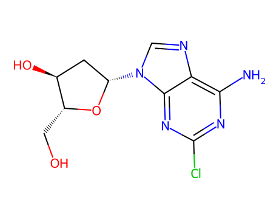
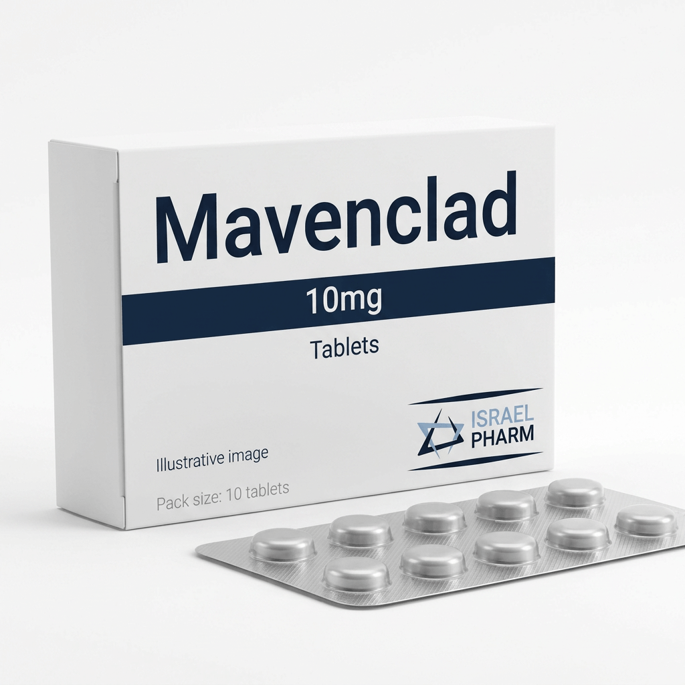
MAVENCLAD®
Cladribineà reconnaître
MAVENCLAD®, LEUSTATIN®, LITAK®
Analogues des purines — Immunomodulateur de la SEP (forme orale)
Mécanisme : Analogue des purines : inhibe la synthèse et la réparation de l'ADN ; dans la SEP, effet prépondérant sur les lymphocytes B et T qui interromprait la cascade d'événements immunitaires (mécanisme pas entièrement élucidé) (p.279-280).
Indications : Formes très actives de sclérose en plaques chez l'adulte (MAVENCLAD®, voie orale) (p.279), Traitement des leucémies
Structure-activité
Analogue de purine (déjà vu dans les antitumoraux pour sa forme injectable) (p.279).
MAVENCLAD = CLADribine en comprimé pour la SEP.
Interférons 2 molécules
structure non représentée
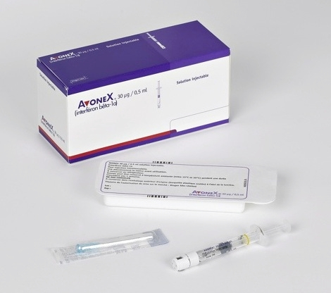
AVONEX®
Interféron bêta-1aà reconnaître
AVONEX®, REBIF®
Interférons — IFN de type I (β)
Noyau : Cytokine polypeptidique (~160 acides aminés), IFN-β (sécrété notamment par les fibroblastes)
Indications : Sclérose en plaques avec alternance de poussées et de rémissions : diminue la fréquence et la gravité des poussées chez certains patients (p.279)
Structure-activité
IFN de type I, comme l'IFN-α ; l'IFN-γ (type II) est sécrété par les lymphocytes T activés et les cellules NK (p.278).
β comme « Bouclier du cerveau » : les bêta pour la SEP, les alfa pour les hépatites.
structure non représentée
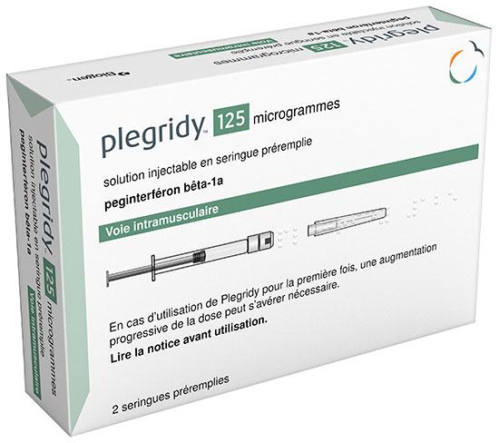
PLEGRIDY®
Interféron bêta-1bà reconnaître
PLEGRIDY®, BETAFERON®
Interférons — IFN de type I (β)
Noyau : Cytokine polypeptidique, IFN-β
Mécanisme : Immunomodulateur (cytokine) (p.279).
Indications : Sclérose en plaques avec alternance de poussées et de rémissions (p.279)
Structure-activité
Même indication que l'IFN β-1a (p.279). (Marques citées par le cours sous β-1b : PLEGRIDY®, BETAFERON®.)
BETAFERON = BETA-interFERON.
Immunomodulateurs de la SEP (petites molécules) 1 molécule · 1 à dessiner
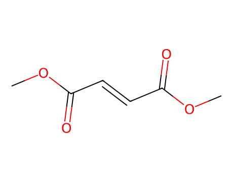
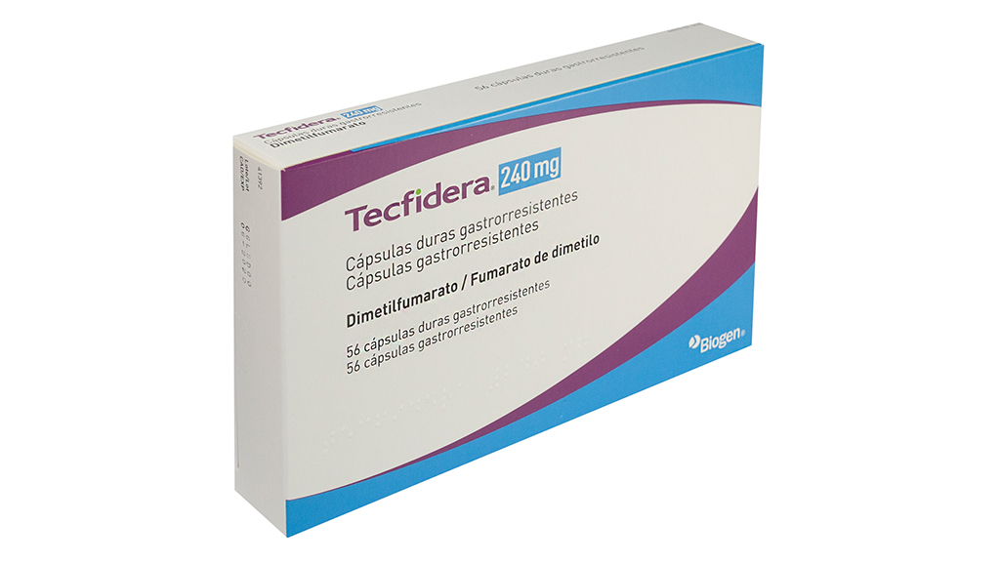
TECFIDERA®
Fumarate de diméthyleà dessiner
TECFIDERA®, SKILARENCE®
Immunomodulateurs de la SEP (petites molécules) — Ester méthylique de l'acide fumarique
Noyau : Diester méthylique de l'acide fumarique (acide butènedioïque de configuration E/trans)
Mécanisme : Mécanisme pas entièrement élucidé ; propriétés anti-inflammatoires et immunomodulatrices ; le diméthyl fumarate et son métabolite le monométhyl fumarate réduisent significativement l'activation des cellules immunitaires et la libération de cytokines pro-inflammatoires (p.279).
Indications : Sclérose en plaques avec alternance de poussées et de rémissions, en monothérapie orale (TECFIDERA®) (p.279), Psoriasis en plaques modéré à sévère nécessitant un traitement systémique, chez l'adulte (SKILARENCE®) (p.279)
Structure-activité
Double liaison TRANS (fumarate ; le cis serait le maléate) portant deux esters méthyliques. Métabolite primaire : fumarate de monométhyle (p.279).
TECFIDERA pour la SEP, SKILARENCE pour la SKIN (psoriasis).
Immunomodulateurs de la SEP 1 molécule
structure non représentée
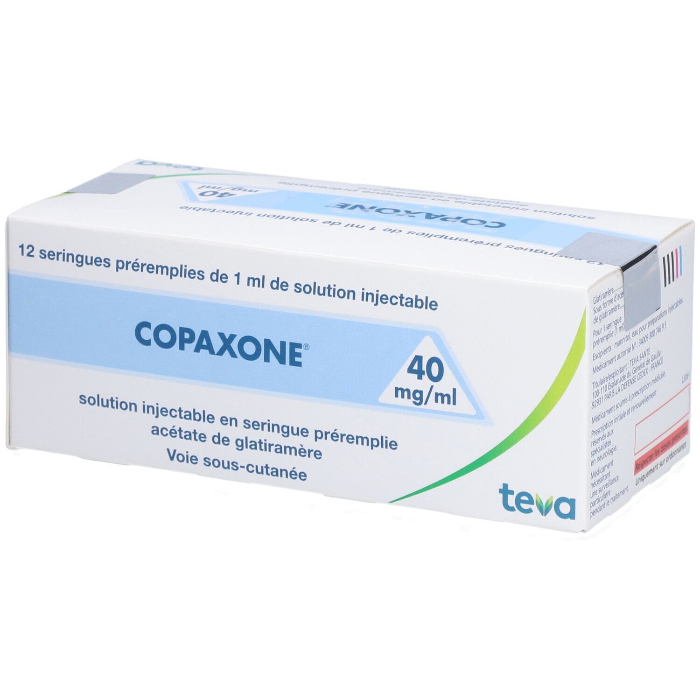
COPAXONE®
Acétate de glatiramèreà reconnaître
COPAXONE®, GLATIRAMYL®
Immunomodulateurs de la SEP — Polypeptide synthétique (copolymère)
Noyau : Polypeptide synthétique préparé à partir d'un mélange d'alanine, acide glutamique, lysine et tyrosine
Mécanisme : Se fixerait directement sur les molécules du CMH de classe II des cellules présentatrices d'antigène et empêcherait l'activation des lymphocytes T par la MBP ; s'oppose à l'encéphalomyélite allergique expérimentale (p.280).
Indications : Sclérose en plaques : pourrait réduire la fréquence des rechutes (p.280)
Structure-activité
Conçu pour ressembler structurellement à la protéine basique de la myéline (MBP) (p.280).
GLATIRAMÈRE = G-A-L-T… : Glu, Ala, Lys, Tyr, un faux morceau de myéline.
Modulateurs des récepteurs S1P 4 molécules
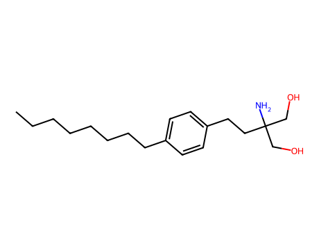
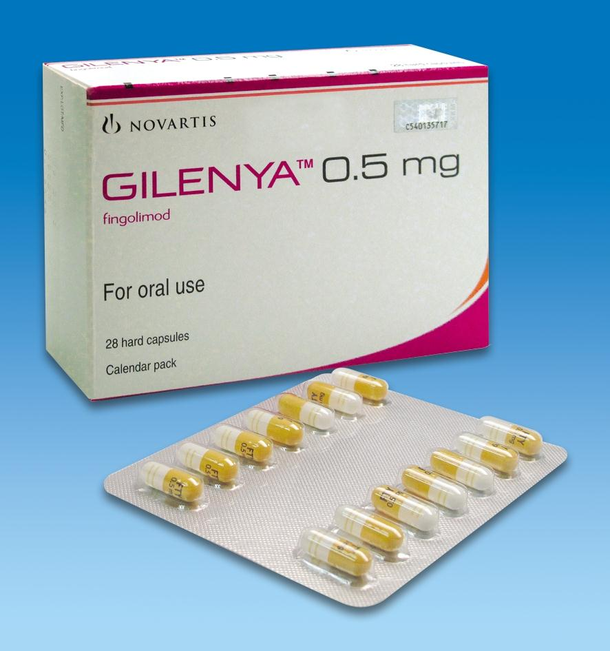
GILENYA
Fingolimodà reconnaître
GILENYA, FINGOLIMOD MYLAN®, FINGOLIMOD ACCORD®
Modulateurs des récepteurs S1P — Analogue de la sphingosine (dérivé de la myriocine)
Noyau : 2-amino-2-[2-(4-octylphényl)éthyl]propane-1,3-diol (analogue de la sphingosine)
Mécanisme : Le fingolimod phosphorylé module les récepteurs S1P : puissant agoniste mais, en utilisation permanente, pourrait se comporter comme un antagoniste. Provoque une lymphopénie en inhibant la sortie des lymphocytes du thymus et des ganglions ; empêcherait leur pénétration dans le SNC. Effet immunosuppresseur également (p.280).
Indications : Sclérose en plaques (p.280)
Structure-activité
Prodrogue : phosphorylé (sphingosine kinases) en (S)-fingolimod-phosphate, analogue de la S1P. Dérivé de la myriocine (ISP-1, Isaria sinclairii), structure proche (p.280).
FINGOLIMOD enferme les lymphocytes dans les ganglions : ils ne « filent » plus vers le cerveau.
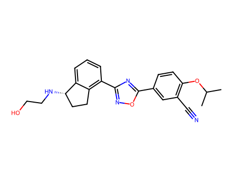
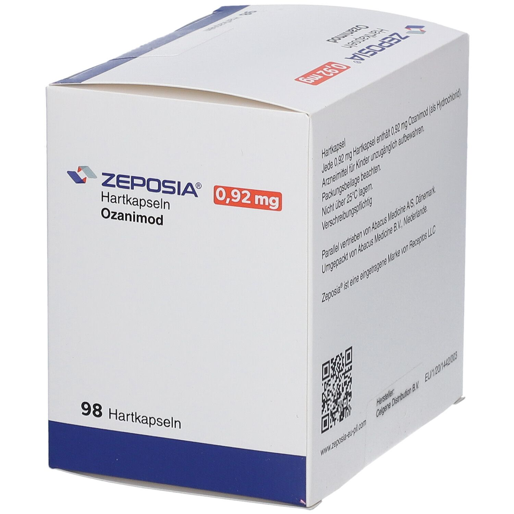
ZEPOSIA®
Ozanimodà reconnaître
ZEPOSIA®
Modulateurs des récepteurs S1P — Dérivé du fingolimod
Noyau : 1,2,4-oxadiazole reliant un benzonitrile (isopropoxy) et un indane aminé
Mécanisme : Modulateur des récepteurs S1P (p.280-281).
Indications : Sclérose en plaques (p.280-281)
Structure-activité
Dérivé (même classe que le fingolimod) (p.281).
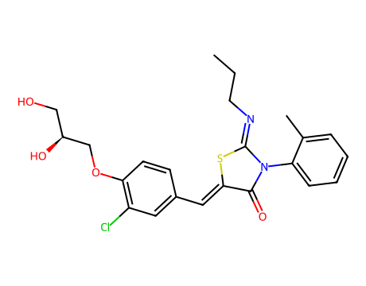
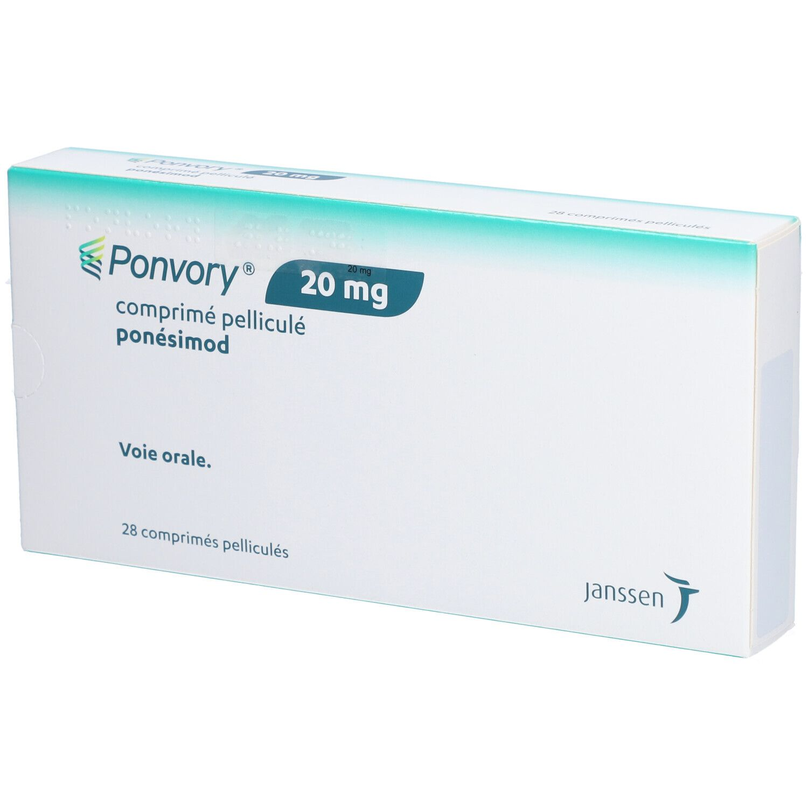
PONVORY®
Ponésimodà reconnaître
PONVORY®
Modulateurs des récepteurs S1P — Dérivé du fingolimod
Noyau : Thiazolidin-4-one 2-imino (Z,Z) portant un o-tolyle et un benzylidène chloré à chaîne glycérol
Mécanisme : Modulateur des récepteurs S1P (p.280-281).
Indications : Sclérose en plaques (p.280-281)
Structure-activité
Dérivé (même classe que le fingolimod) (p.281).
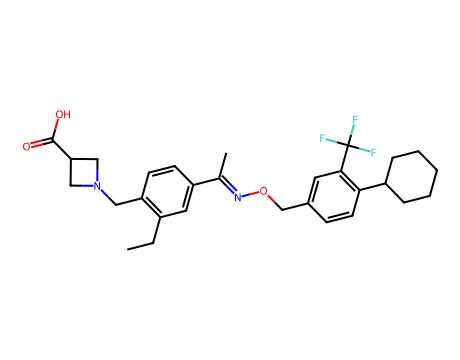
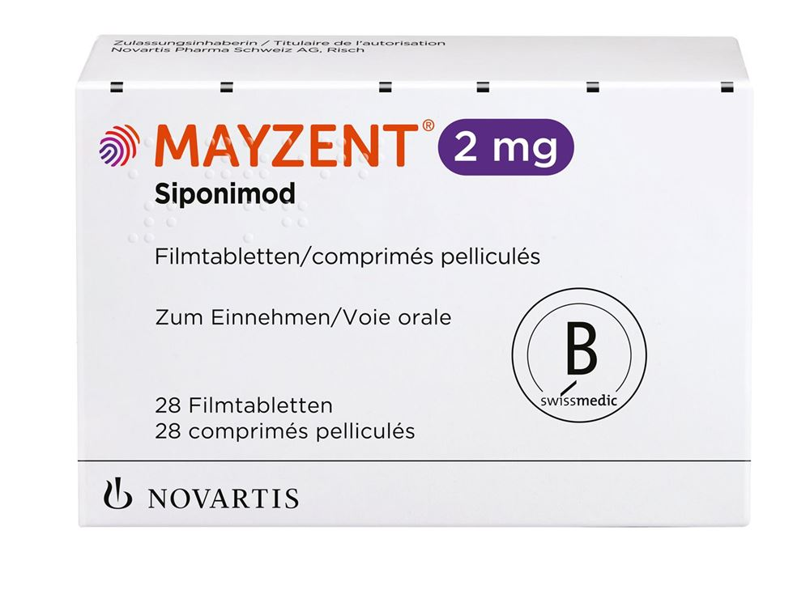
MAYZENT®
Siponimodà reconnaître
MAYZENT®
Modulateurs des récepteurs S1P — Dérivé du fingolimod
Mécanisme : Modulateur des récepteurs S1P (p.280-281).
Indications : Sclérose en plaques (p.280-281)
Structure-activité
Dérivé (même classe que le fingolimod) ; structure non dessinée dans le cours (p.281).
Immunomodulateurs de la SEP (petites molécules) 1 molécule
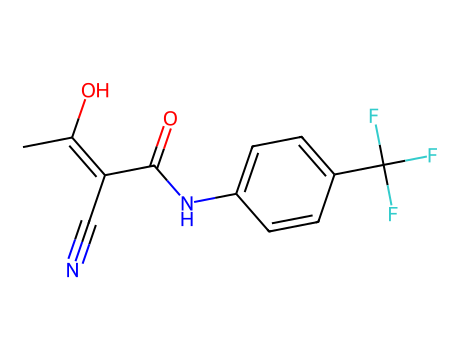
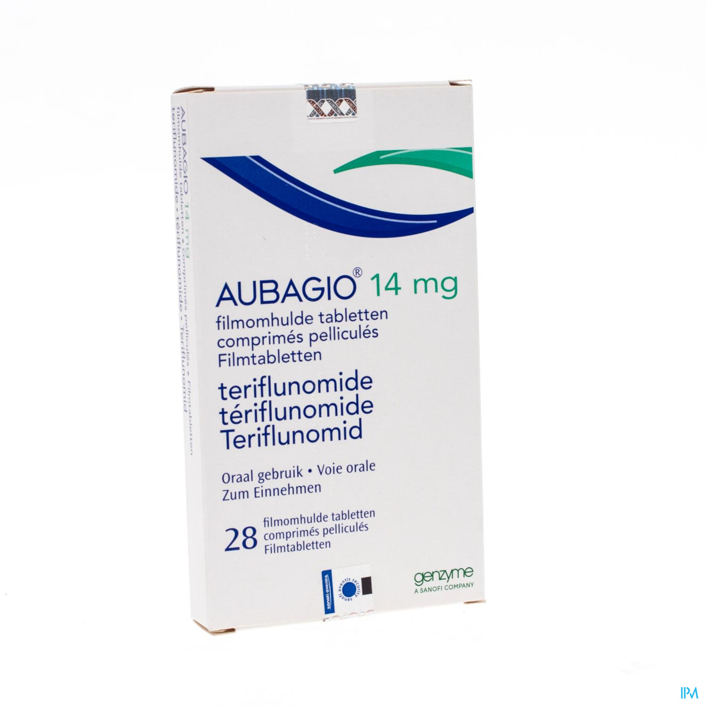
AUBAGIO®
Tériflunomideà reconnaître
AUBAGIO®, TERIFLUNOMIDE EG®, TERIFLUNOMIDE MYLAN®
Immunomodulateurs de la SEP (petites molécules) — Métabolite actif du léflunomide
Noyau : 2-cyano-3-hydroxy-N-[4-(trifluorométhyl)phényl]but-2-ènamide (forme ouverte du cycle isoxazole du léflunomide)
Mécanisme : Immunomodulateur (métabolite actif du léflunomide, aux propriétés anti-inflammatoires) (p.281).
Indications : Sclérose en plaques (p.279, 281)
Structure-activité
Métabolite actif du léflunomide (ouverture du cycle isoxazole) (p.281).
TÉRI-flunomide = le fils actif de LÉ-flunomide.
Immunomodulateurs anti-inflammatoires 1 molécule
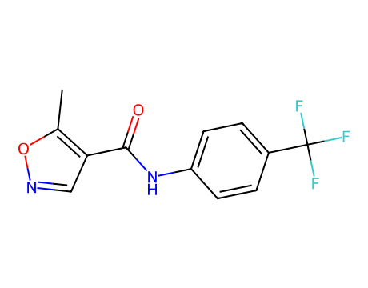
Léflunomideà reconnaître
pas de nom commercial au cours
Immunomodulateurs anti-inflammatoires — Prodrogue du tériflunomide (isoxazole)
Mécanisme : Immunomodulateur aux propriétés anti-inflammatoires (p.281).
Indications : Polyarthrite rhumatoïde (p.281) — sera vu dans le chapitre des anti-inflammatoires
Structure-activité
Son métabolite actif est le tériflunomide (p.281).
Anticorps monoclonaux (SEP) 4 molécules
structure non représentée
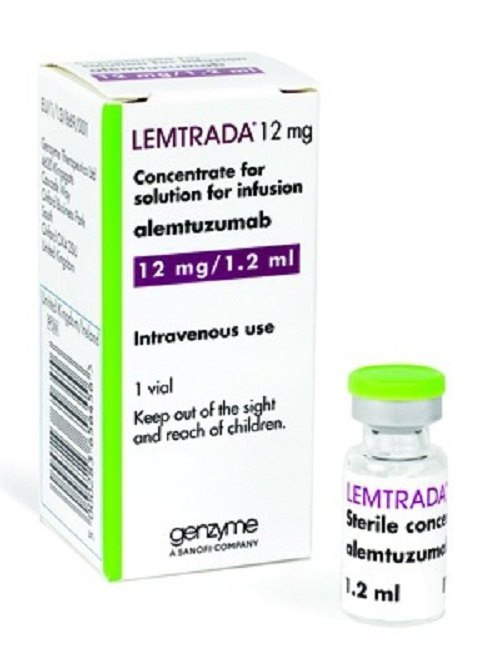
LEMTRADA®
Alemtuzumabà reconnaître
LEMTRADA®
Anticorps monoclonaux (SEP) — Anti-CD52
Mécanisme : Anticorps monoclonal contre la glycoprotéine CD52 à la surface des lymphocytes (p.282).
Indications : Sclérose en plaques (p.279, 282)
structure non représentée
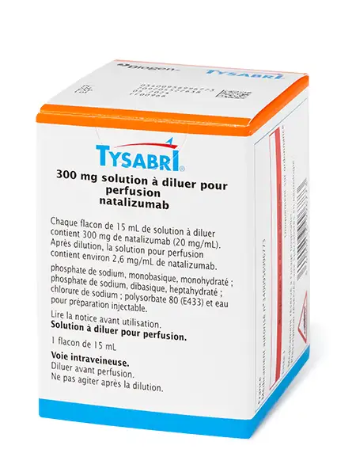
TYSABRI®
Natalizumabà reconnaître
TYSABRI®
Anticorps monoclonaux (SEP) — Anti-intégrines
Mécanisme : Anticorps monoclonal qui se lie aux molécules d'adhésion (intégrines) des leucocytes et empêche leur transmigration à travers l'endothélium vers les tissus parenchymateux inflammatoires (p.282).
Indications : Sclérose en plaques (p.279, 282)
structure non représentée
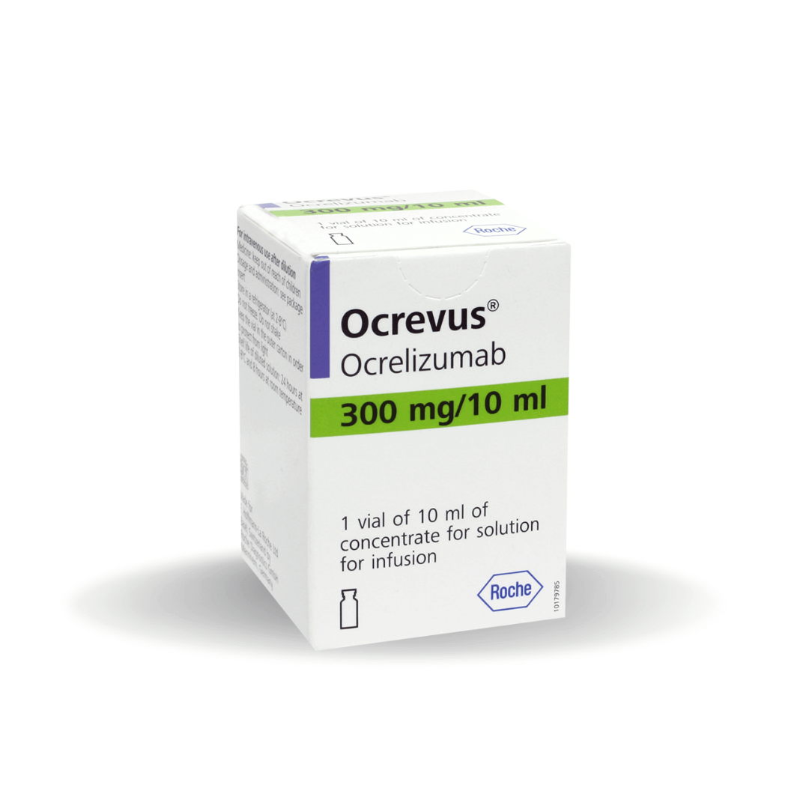
OCREVUS®
Ocrélizumabà reconnaître
OCREVUS®
Anticorps monoclonaux (SEP) — Anti-CD20
Mécanisme : Anticorps monoclonal contre les lymphocytes B exprimant le CD20 (p.282).
Indications : Sclérose en plaques (p.279, 282)
structure non représentée
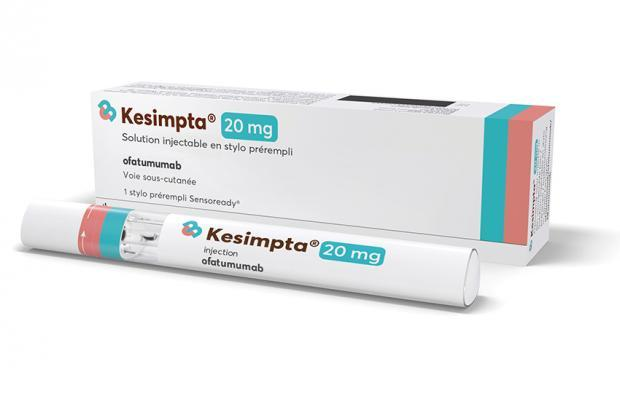
KESIMPTA®
Ofatumumabà reconnaître
KESIMPTA®
Anticorps monoclonaux (SEP) — Anti-CD20
Mécanisme : Anticorps monoclonal contre les lymphocytes B exprimant le CD20 (p.282).
ImIDs — Dérivé du thalidomide (isoindolinone 4-amino)
Noyau : Glutarimide (pipéridine-2,6-dione) lié à une isoindolin-1-one (un seul C=O) portant un NH2 en 4
Mécanisme : Anti-néoplasique, anti-angiogène, pro-érythropoïétique et immunomodulateur : inhibe la prolifération de cellules malignes hématopoïétiques (plasmocytes de myélome, délétion chromosome 5), renforce l'immunité T et NK et accroît les NKT, inhibe l'angiogenèse, amplifie la production d'hémoglobine fœtale (cellules CD34+), inhibe TNF-α et IL-6 des monocytes (p.283).
Indications : Myélome multiple, en association avec la dexaméthasone (médicament orphelin) (p.282)
Structure-activité
Par rapport au thalidomide : un C=O de la phtalimide remplacé par CH2 (isoindolinone) + NH2 aromatique. Produit sous forme de mélange racémique (p.282).
LÉNA perd un C=O (CH2) et gagne un NH2 ; POMA garde ses deux C=O + NH2.
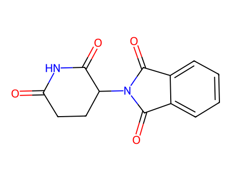
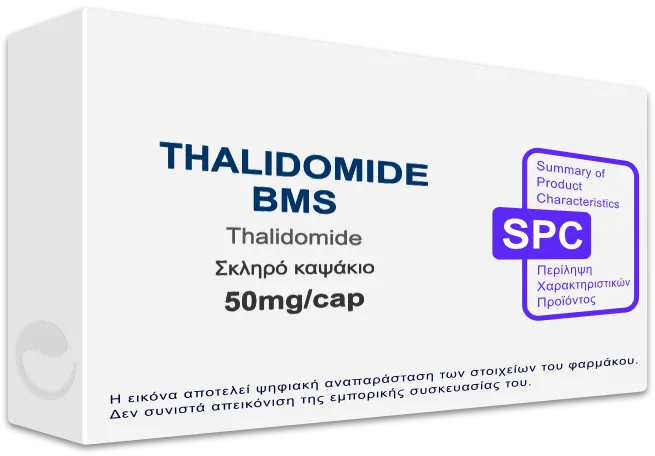
THALIDOMIDE BMS®
Thalidomideà reconnaître
THALIDOMIDE BMS®
ImIDs — Tête de série des ImIDs (phtalimide)
Noyau : Phtalimide (isoindoline-1,3-dione) liée à un glutarimide
Mécanisme : Immunomodulateur (classe des ImIDs) (p.282).
Structure-activité
Tête de série des ImIDs (Immunomodulatory drugs) ; deux C=O sur l'isoindoline, pas de NH2 (p.282-283).
THALIDOMIDE = le « père » tératogène de la famille ImIDs.
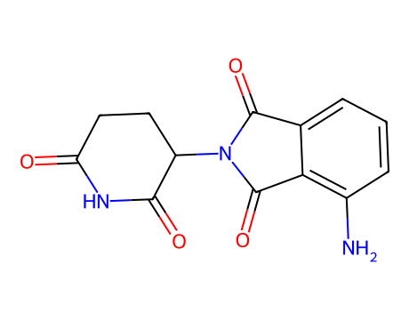
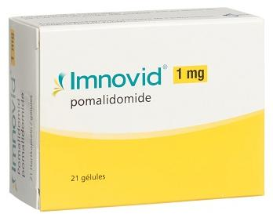
IMNOVID®
Pomalidomideà reconnaître
IMNOVID®
ImIDs — Dérivé du thalidomide (phtalimide 4-amino)
Noyau : 4-amino-phtalimide liée à un glutarimide
Mécanisme : ImID structurellement proche du thalidomide et du lénalidomide (p.283).
Indications : Myélome multiple réfractaire à d'autres traitements (p.283)
Structure-activité
= thalidomide + NH2 aromatique (garde les 2 C=O de la phtalimide) ; ≠ lénalidomide (un seul C=O) (p.283).
Inhibiteurs de PDE4 1 molécule
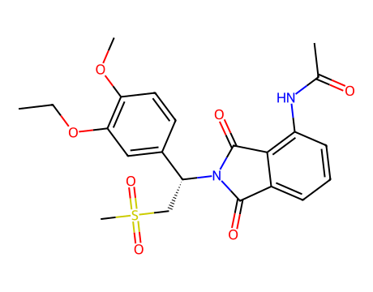
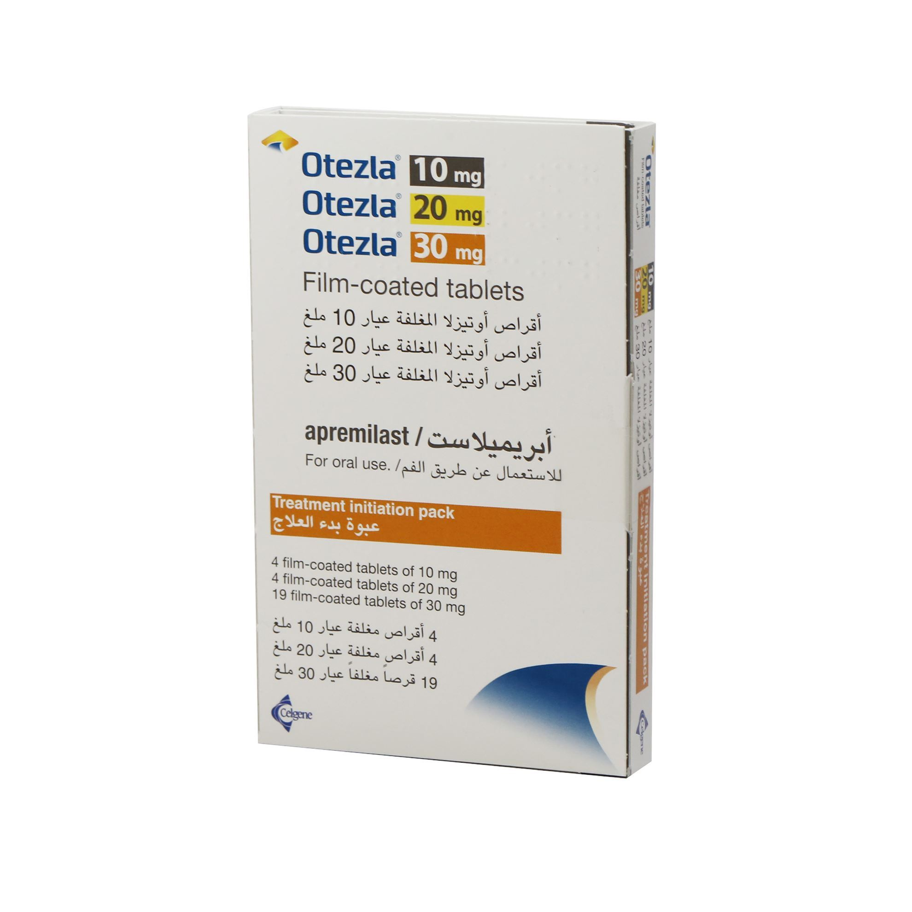
OTEZLA®
Aprémilastà reconnaître
OTEZLA®
Inhibiteurs de PDE4 — Dérivé phtalimide (petite molécule orale)
Noyau : Phtalimide 4-acétamido N-substituée par un 1-(3-éthoxy-4-méthoxyphényl)-2-(méthylsulfonyl)éthyle (S)
Mécanisme : Inhibiteur de la phosphodiestérase 4 (PDE spécifique de l'AMPc, prédominante dans les cellules inflammatoires) : ↑ AMPc intracellulaire → ↓ TNF-α, IL-23, IL-17 et autres cytokines pro-inflammatoires ; module aussi l'IL-10 anti-inflammatoire (p.283).
Indications : Rhumatisme psoriasique (p.283), Psoriasis en plaques chronique modéré à sévère de l'adulte en cas d'échec, contre-indication ou intolérance aux autres traitements systémiques (ciclosporine, méthotrexate, PUVA-thérapie) (p.283), Ulcères buccaux associés à la maladie de Behçet chez l'adulte éligible à un traitement systémique (p.283)
Structure-activité
Ressemble aux ImIDs par sa phtalimide mais c'est un inhibiteur de PDE4 (catéchol diéther + méthylsulfone) (p.283-284).
OTEZLA : « Ôte » la PDE4 → plus d'AMPc → moins d'inflammation.
Antagonistes des purines 1 molécule · 1 à dessiner
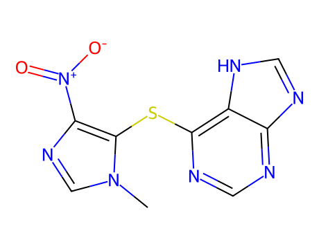
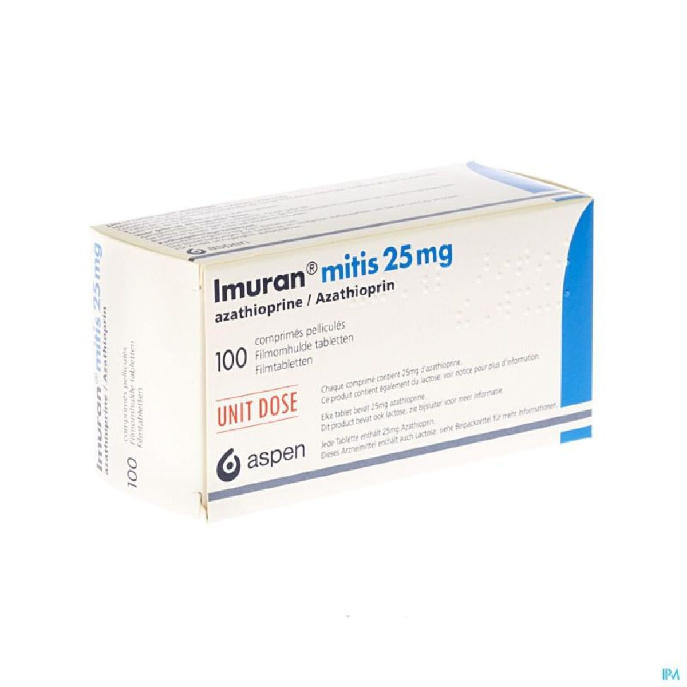
IMURAN®
Azathioprineà dessiner
IMURAN®, AZATHIOPRINE SANDOZ®
Antagonistes des purines — Dérivé (prodrogue) de la 6-mercaptopurine
Noyau : Purine reliée en position 6 par un pont soufré (thioéther) à un 1-méthyl-4-nitroimidazol-5-yle
Mécanisme : Antagoniste des purines dérivé de la 6-mercaptopurine (p.284).
= 6-mercaptopurine dont le SH est substitué par un 1-méthyl-4-nitroimidazole. ATTENTION : sur le dessin du cours, l'atome de soufre du pont n'apparaît pas (on ne voit qu'un sommet) ; la vraie structure possède un S entre la purine et l'imidazole (dérivé de la 6-MERCAPTOpurine).
Inhibiteurs de la calcineurine — Undécapeptide cyclique d'origine fongique
Noyau : Peptide cyclique de 11 acides aminés, nombreux N-méthylés, dont un acide aminé inhabituel portant une chaîne hydroxylée à double liaison (MeBmt)
Mécanisme : Inhibe la calcineurine (protéine phosphatase qui stimule des facteurs de transcription intervenant dans la synthèse d'IL-2) → bloque l'activation des lymphocytes T (p.285).
Indications : Indications classiques des immunosuppresseurs : transplantation (rejet de greffe), maladies auto-immunes… (p.284-285), Formes étendues et graves de psoriasis résistant aux autres traitements (p.285), Dermatite atopique de l'adulte (p.285)
Structure-activité
Gros peptide cyclique N-méthylé, très lipophile. (Le dessin du cours représente les chaînes latérales de façon simplifiée.)
CICLO-sporine = peptide en CYCLE issu d'une SPORE (champignon).
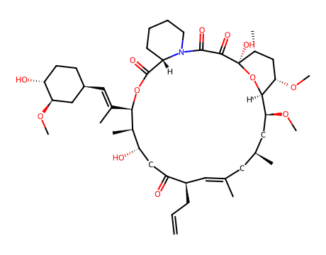
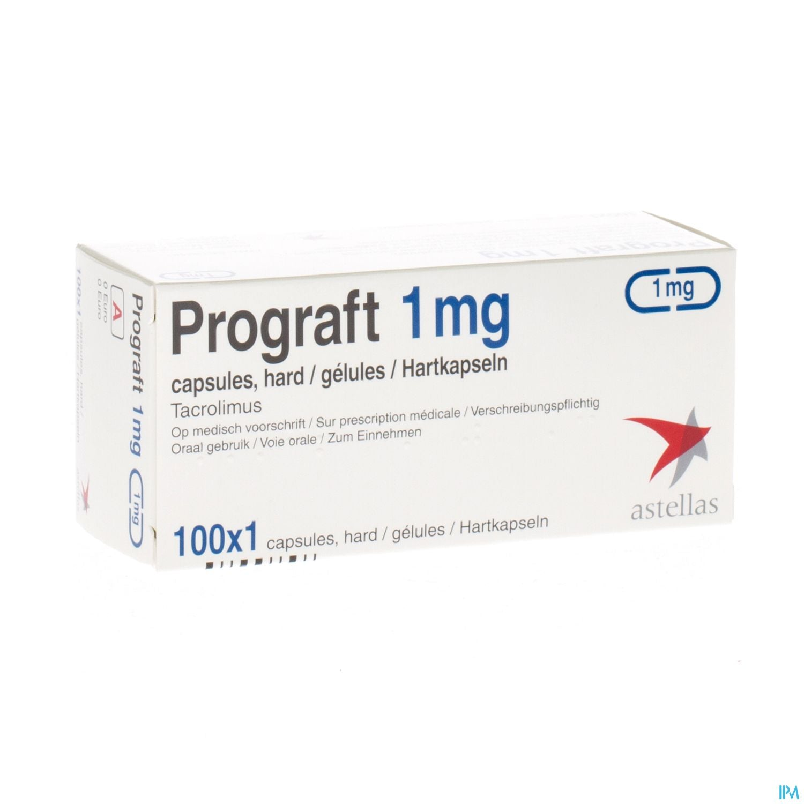
PROGRAFT®
Tacrolimusà reconnaître
PROGRAFT®, ADVAGRAFT®, PROTOPIC®
Inhibiteurs de la calcineurine — Macrolide (macrocycle hydrophobe) de Streptomyces
Noyau : Macrolactone contenant un pipécolate, un α-cétoamide, un hémicétal (tétrahydropyrane), une chaîne allyle et un cyclohexyle hydroxy-méthoxy
Mécanisme : Inhibiteur de la calcineurine : bloque l'activation des lymphocytes T (même mécanisme que la ciclosporine) (p.285-286).
Indications : Immunosuppresseur en usage interne (PROGRAFT®, ADVAGRAFT®) (p.286), Dermite atopique en application cutanée (PROTOPIC®) (p.286)
Structure-activité
Macrocycle hydrophobe isolé au Japon à partir d'un Streptomyces ; même mécanisme que la ciclosporine malgré une structure très différente (p.286).
TACROLIMUS frappe la même cible que la CICLOsporine (calcineurine) ; PROTOPIC = la pommade de la peau atoPIQUE.
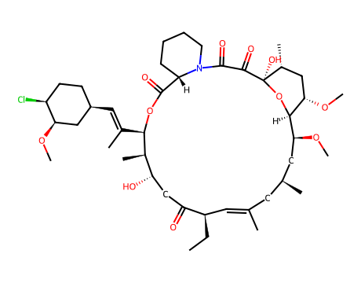
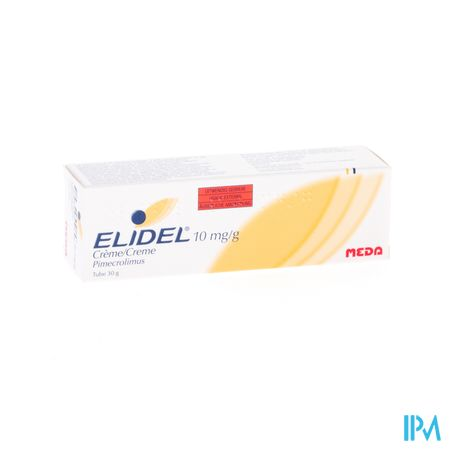
ELIDEL®
Pimécrolimusà reconnaître
ELIDEL®
Inhibiteurs de la calcineurine — Macrolide à usage dermique
Mécanisme : Même famille que le tacrolimus (inhibition de la calcineurine) (p.286).
Préparation « assez semblable » au tacrolimus à usage dermique (p.286). Structure non dessinée dans le cours.
ELIDEL et PROTOPIC : les deux crèmes « -limus » de l'eczéma atopique.
Inhibiteurs de mTOR 2 molécules
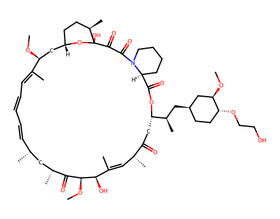
Évérolimusà reconnaître
CERTICAN®
Inhibiteurs de mTOR — Macrolide (dérivé 40-O-(2-hydroxyéthyl) du sirolimus)
Noyau : Macrolactone de type rapamycine (triène conjugué, pipécolate, hémicétal) avec un O-(2-hydroxyéthyl) sur le cyclohexyle
Mécanisme : Inhibe mTOR (sérine/thréonine kinase régulant prolifération et croissance cellulaires) → inhibe la prolifération et l'expansion clonale des lymphocytes T activés par l'antigène et médiée par IL-2 et IL-15 (p.287).
Indications : Immunosuppresseur en usage interne (p.287)
Structure-activité
= sirolimus + chaîne 2-hydroxyéthyle sur l'OH du cyclohexyle (HO–CH2–CH2–O–). Le cours les présente comme dérivés du tacrolimus (p.287).
Mécanisme : Inhibiteur de l'inosine monophosphate déshydrogénase (IMPDH : IMP → XMP, précurseur des dérivés de la guanosine) ; particulièrement actif sur les lymphocytes B et T dont il inhibe la prolifération ; peut ainsi inhiber la production d'anticorps (p.288).
Indications : Immunosuppresseur (p.288)
Structure-activité
Acide carboxylique libre (≠ mycophénolate mofétil, ester morpholinoéthylique). NB : la double liaison de la chaîne est E dans la molécule réelle.
MYCOphénolique = issu d'un champignon (MYCO, Penicillium) ; il coupe la route de la GUANOSINE.
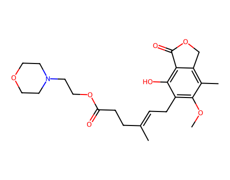
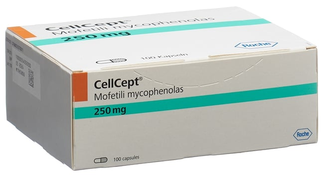
CELLCEPT®
Mycophénolate mofétilà reconnaître
CELLCEPT®
Inhibiteurs de l'IMPDH — Ester (prodrogue) de l'acide mycophénolique
Noyau : Acide mycophénolique estérifié par le 2-morpholinoéthanol
Mécanisme : Prodrogue de l'acide mycophénolique, inhibiteur de l'IMPDH (p.288).
Indications : Prévention des rejets aigus de greffes de rein (p.288)
Structure-activité
Estérification de l'acide mycophénolique (ester 2-morpholinoéthylique) pour augmenter sa biodisponibilité (p.288).
MOFÉTIL = MOrpholine-éthyl ester : un « porte-bagage » pour mieux être absorbé.
Anticorps immunosuppresseurs 1 molécule
structure non représentée
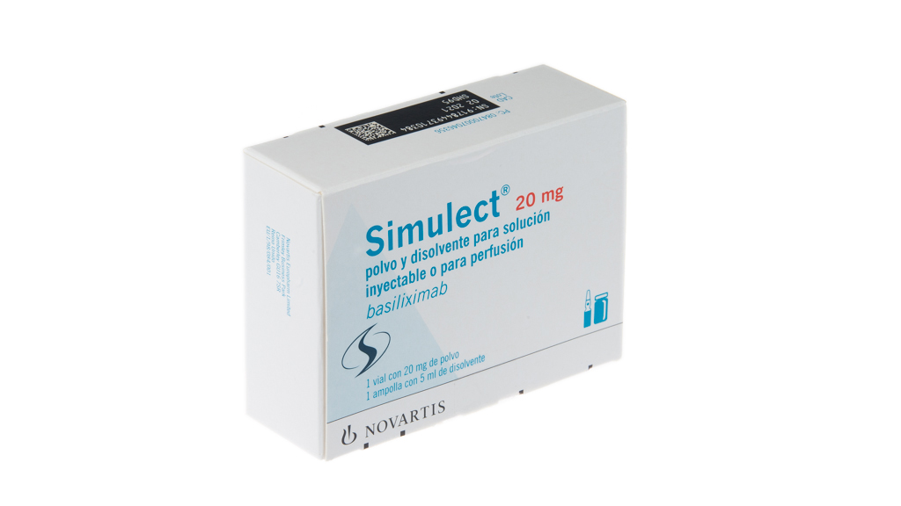
SIMULECT®
Basiliximabà reconnaître
SIMULECT®
Anticorps immunosuppresseurs — Anticorps monoclonal anti-récepteur de l'IL-2
Mécanisme : Anticorps monoclonal de souris humanisé dirigé contre le récepteur de l'interleukine 2 (p.288).
Indications : Prévention du rejet aigu après transplantation rénale allogénique de novo chez l'adulte et l'enfant (p.288)
BASILIXIMAB : bloque la BASE de l'activation T (récepteur IL-2).
Ce que le prof a dit en cours
Retenir le rôle de l'interleukine 2 dans la différenciation et la prolifération des lymphocytes T.
Immunosuppresseurs : prévention du rejet de greffe ; quasi tous d'origine naturelle (champignons) ; inhibiteurs de la calcineurine et de mTOR.
Interférons : IFN-α pour les hépatites, IFN-β pour la sclérose en plaques ; pégylation pour prolonger la durée d'action.
Deux immunomodulateurs à retenir pour le cours sur l'inflammation.
Vaccins, immunoglobulines et sérums : pas vus ici (repris en master, certificat de vaccination du pharmacien).
Immunomodulateur ≠ immunosuppresseur : l'immunomodulateur régule la réponse immunitaire (infection, maladie auto-immune) ; l'immunosuppresseur l'arrête (greffe), au prix d'infections.
Interférons : cytokines immunostimulantes et antivirales. Type I (α, β) : peginterféron α-2a (PEGASYS®) dans les hépatites B et C ; interféron β (AVONEX®, BETAFERON®) contre les poussées de sclérose en plaques.
Sclérose en plaques : fumarate de diméthyle (TECFIDERA®, diester de l'acide fumarique du cycle de Krebs, oral), cladribine (analogue des purines), glatiramère (COPAXONE®, polypeptide qui mime la protéine basique de la myéline), modulateurs S1P (fingolimod, origine fongique : myriocine).
Thalidomide : sédatif/antiémétique tératogène (phocomélie) ; on a compris qu'elle était immunomodulatrice et anti-angiogénique -> ImIDs (lénalidomide REVLIMID®, pomalidomide) dans le myélome multiple, contraception stricte.
Aprémilast (OTEZLA®) : inhibiteur de la PDE4 -> AMPc augmenté -> moins de TNF-α, IL-23, IL-17 ; psoriasis et rhumatisme psoriasique ; structure proche de la thalidomide. Léflunomide et tériflunomide : à retenir pour le cours sur l'inflammation.
Azathioprine (IMURAN®, à dessiner) : antagoniste des bases puriques (pro-drogue de la mercaptopurine) -> effet antimitotique sur la moelle.
Ciclosporine (champignon, isolée en 1969) et tacrolimus (Streptomyces, macrocycle) : inhibent la calcineurine -> plus d'IL-2. Tacrolimus/pimécrolimus en crème : dermatite atopique. Sirolimus (rapamycine), évérolimus : inhibiteurs de mTOR. Acide mycophénolique (Penicillium) : inhibiteur de l'IMPDH (synthèse de la guanosine).
Les questions posées par le prof
Relevées dans tes enregistrements du cours (et ta base Notion « Questions d'Examen »). Le prof : « vous pourrez avoir toutes mes questions d'examen, je vais vous les donner au fur et à mesure ». Les questions marquées « reformulée » reprennent un point que le prof a expliqué en détail ce jour-là, transformé en question. Réponds d'abord sur papier, puis ouvre la réponse pour te corriger.
20/11/2025Quel est le point commun du mécanisme des principaux immunosuppresseurs ? Voir la réponse
La voie de l'interleukine 2 (IL-2), cytokine clé de la différenciation et de la prolifération des lymphocytes T : la ciclosporine et le tacrolimus empêchent sa synthèse (inhibition de la calcineurine), les inhibiteurs de mTOR bloquent sa signalisation. La plupart sont d'origine naturelle (champignons, Streptomyces).
20/11/2025 · reformuléeQuelle différence entre un immunomodulateur et un immunosuppresseur ? Voir la réponse
L'immunomodulateur agit directement ou indirectement sur le système immunitaire pour réguler la réponse (infection, maladie auto-immune : interférons, fumarate de diméthyle, glatiramère, ImIDs, aprémilast). L'immunosuppresseur vise à bloquer la réponse immunitaire (prévention du rejet de greffe : ciclosporine, tacrolimus, mTOR, mycophénolate, azathioprine), avec un risque infectieux accru.
20/11/2025 · reformuléeQu'est-ce que la calcineurine et comment agissent la ciclosporine et le tacrolimus ? Voir la réponse
La calcineurine est une protéine phosphatase qui active des facteurs de transcription (NFAT) nécessaires à la synthèse de l'interleukine 2. Ciclosporine (NEORAL SANDIMMUN®) et tacrolimus (PROGRAFT®, ADVAGRAFT®, PROTOPIC® en crème) l'inhibent -> plus d'IL-2 -> plus d'activation ni de prolifération des lymphocytes T. Produits d'origine naturelle (champignon ; Streptomyces).
20/11/2025 · reformuléePourquoi la thalidomide est-elle revenue en thérapeutique ? Voir la réponse
Retirée pour son effet tératogène (phocomélie), on a compris que cet effet traduisait une action sur le développement des tissus : elle est immunomodulatrice et anti-angiogénique. Elle et ses dérivés (lénalidomide REVLIMID®, pomalidomide IMNOVID®) sont utilisés dans le myélome multiple, sous contraception stricte.
20/11/2025 · reformuléePourquoi pégyle-t-on l'interféron et quelles sont les indications des interférons α et β ? Voir la réponse
La pégylation (PEG greffé) augmente la taille et la durée de vie (moins d'élimination rénale) : une injection par semaine. Peginterféron α-2a (PEGASYS®) : hépatites B et C chroniques. Interféron β (AVONEX®, BETAFERON®) : prévention des poussées de sclérose en plaques.
Fiche de révision au format de l'examen
Examen écrit, 1 h 30 — 10 pages dont 1 de brouillon. Entraîne-toi dans les conditions : réponds sur papier, puis ouvre le corrigé.
Partie 1 — Questions ouvertes (environ 2 pages chacune)
Question 1. Parlez-moi des immunosuppresseurs.
Le plan attendu (sous-questions)
Indications et risques
Inhibiteurs de la calcineurine
Inhibiteurs de mTOR
Antimétabolites
Corticostéroïdes
Corrigé détaillé
Indications et risques
Prévention du rejet de greffe, maladies auto-immunes ; risques d'infections et de cancers, interactions (CYP3A4).
Inhibiteurs de la calcineurine
Ciclosporine (champignon) et tacrolimus : complexe avec une immunophiline -> inhibition de la calcineurine -> pas d'activation de NFAT -> pas de transcription de l'IL-2.
Inhibiteurs de mTOR
Sirolimus, évérolimus : bloquent la réponse des lymphocytes à l'IL-2 (prolifération).
Antimétabolites
Acide mycophénolique / mycophénolate mofétil (ester pro-drogue) : inhibition de l'IMPDH -> synthèse des purines (guanine) dans les lymphocytes.
Corticostéroïdes
Immunosuppression large (inhibition de la transcription de cytokines).
Question 2. Parlez-moi des immunomodulateurs utilisés dans la sclérose en plaques et les maladies inflammatoires.
Le plan attendu (sous-questions)
Interférons
Petites molécules SEP
Glatiramère
Modulateurs S1P
ImIDs et PDE4
Corrigé détaillé
Interférons
IFN-β (AVONEX®, REBIF®, BETAFERON®) : réduisent les poussées de SEP ; IFN-α pégylé (PEGASYS®) : hépatites.
Petites molécules SEP
Fumarate de diméthyle (TECFIDERA®, oral, à dessiner), tériflunomide (AUBAGIO®), cladribine (MAVENCLAD®).
Glatiramère
COPAXONE® : polypeptide synthétique (Ala, Glu, Lys, Tyr) qui mime la protéine basique de la myéline -> moins de rechutes.
Modulateurs S1P
Fingolimod (GILENYA), ozanimod, ponésimod, siponimod : retiennent les lymphocytes dans les ganglions ; origine fongique (myriocine).
La fixation de polyéthylène glycol augmente la taille de la protéine et diminue son élimination rénale et sa dégradation : durée d'action prolongée (une injection par semaine, PEGASYS®) et moins d'immunogénicité.
QROC 2. Pourquoi l'azathioprine provoque-t-elle une dépression médullaire ?
Réponse
C'est une pro-drogue de la mercaptopurine, antagoniste des bases puriques : elle freine la synthèse de l'ADN des cellules qui se divisent vite, surtout les leucocytes de la moelle -> effet antimitotique (comme les antitumoraux), d'où l'immunosuppression et le risque de leucopénie.
Partie 3 — Tableau de molécules
Comme à l'examen : chaque ligne te donne un indice (structure, DCI ou nom commercial). Complète le reste sur papier ou dans les cases, puis corrige. Structure à dessiner seulement si la molécule est en bleu gras souligné.